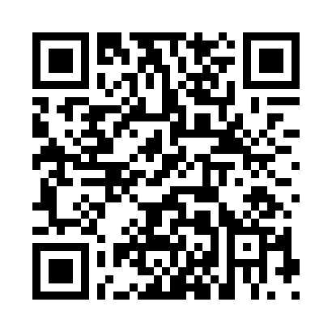

KEEP THIS BALLOT TRACKER
To cast your ballot,
place it in the ballot box.
Keep this ballot tracker in case you want to
check on your ballot after the polls close.
If you want to check that the voting system recorded your votes,
you can either goto www.CheckYourVote.com
and then enter this unique code:
Q8F7B6Y3YKKKGG2GQRWD
Or you can scan this unique QR code with your phone:

Voting Date: July 9th, 2015
Location: Redmond, WA
Voting Terminal: UI12345
Time: 10:56:02 AM